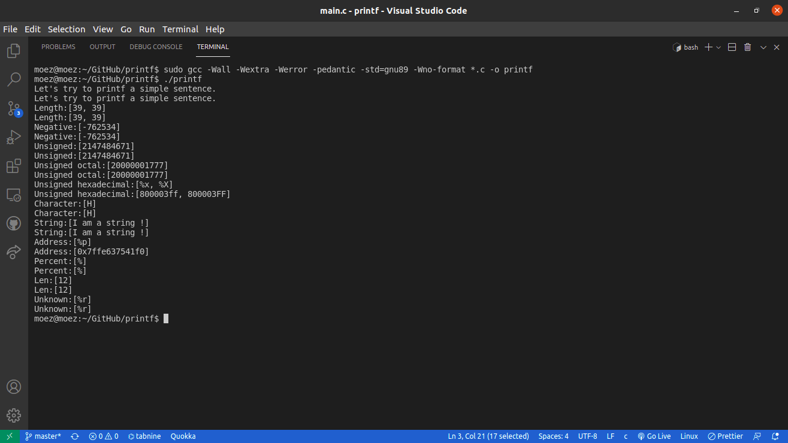
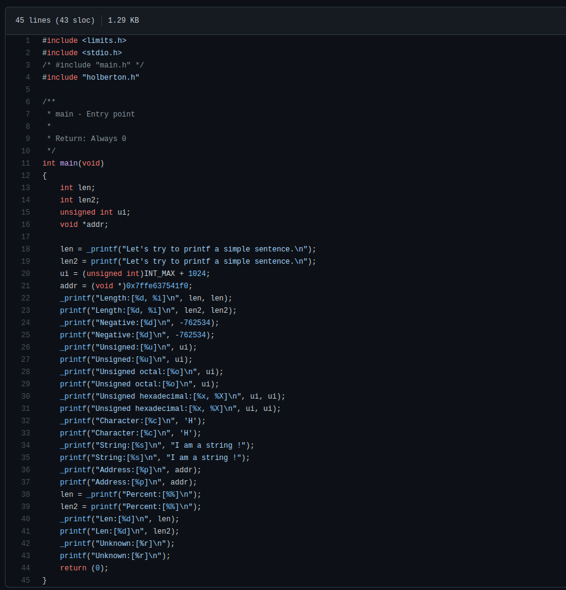

Formatting "C" function
This project consists of a custom made printf function for C language that allows different input arguments and options; its development was part of an intensive coding program in Holberton School Tunis.
The function returns the number of characters printed (excluding the null byte used to end output to strings).
If an output error is encountered, a negative value of -1 is returned.
The prototype of this function is the next:
int _printf(char format, ...)
the prototype accept one mandatory format argument, and an extra number of arguments that can be none, or many.
In the early days, computer programmers would write their own subroutines to read in and print out numbers. It is not terribly difficult, actually. Just allocate a character array to hold the result, divide the number by ten, keep the remainder, add x30 to it, and store it at the end of the array. Repeat the process until all the digits are found. Then print it. Too easy, right? But even though it was easy (for Einstein), it still took some effort. And what about error checking, and negative numbers? So the computer programmers brought forth libraries of prerecorded functions. And it was good. Eventually the most popular of these functions were canonized into membership in the “standard” libraries. Number printing was popular enough to gain this hallowed honor. This meant that programmers did not have to reinvent the number-printing subroutine again and again. It also meant that everybody’s favorite options tried to make it into the standard. Thus was printf born.
In the most simple case, printf takes one argument: a string of characters to be printed. This string is composed of characters, each of which is printed exactly as it appears. So:
printf("xyz");
Would simply print an "x", then a "y", and finally a "z". This is not exactly “formatted” printing, but it is still the basis of what printf does.
git clone https://github.com/moezbenrebah/printf.git
$ gcc -Wall -Werror -Wextra -pedantic *.c -o printf
Note: please refer to readme file on my GitHub repo to learn more about flags that comes up with the gnu gcc.
In order to test the basic feature of the implemented printf function, I create a file "main.c" which includes lines to format with both original and my printf function:
The output must the have the same result either using the original printf or the implemented printf function: